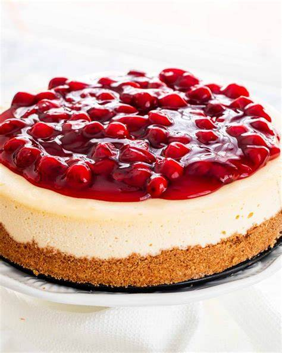

No-Bake Cheesecake

Ingredients:
- 2 cups graham cracker crumbs
- 1/2 cup unsalted butter, melted
- 16 oz cream cheese, softened
- 1/2 cup granulated sugar
- 1 teaspoon vanilla extract
- 1 cup heavy cream
- Cherry pie filling or fresh fruit for topping (optional)
Steps:
- In a mixing bowl, combine the graham cracker crumbs and melted butter until the mixture resembles wet sand.
- Press the mixture into the bottom of a 9-inch springform pan to form the crust. Refrigerate while preparing the filling.
- In another mixing bowl, beat the softened cream cheese until smooth.
- Add the granulated sugar and vanilla extract to the cream cheese and beat until well combined.
- In a separate bowl, whip the heavy cream until stiff peaks form.
- Gently fold the whipped cream into the cream cheese mixture until smooth and well combined.
- Spread the filling evenly over the prepared crust in the springform pan.
- Refrigerate the cheesecake for at least 4 hours, or until set.
- Before serving, you can top the cheesecake with cherry pie filling or fresh fruit if desired.